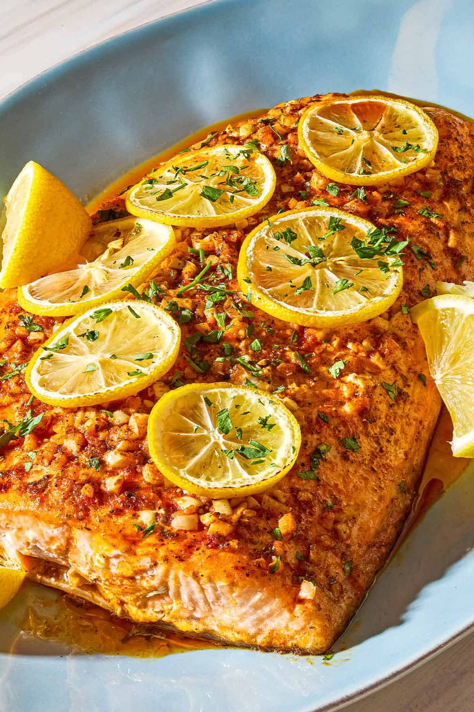

Salmon Recipe

Description
My lemon garlic salmon recipe is easy enough for a beginner to make on a weeknight,
but elegant enough to serve at a dinner party. To give the salmon bold flavor I mix lemon
juice and zest with olive oil, lots of finely chopped garlic, herbaceous oregano,
and, for gorgeous color, paprika.
Seafood is a staple of the Mediterranean diet, and salmon in particular is high
in vitamin D and omega-3 fatty acids and low in saturated fat. It's also just a beautiful,
tasty fish and a household favorite. I just know you're gonna love it!
Ingredients
For The Salmon
- 2 pounds salmon fillet
- Kosher salt
- 1 large lemon
- Chopped parsley, for garnish
For The Lemon Garlic Sauce
- 2 large lemons
- 3 tablespoons extra virgin olive oil
- 5 garlic cloves, chopped
- 2 teaspoon dried oregano
- 1 teaspoon sweet paprika
- 1/2 teaspoon black pepper
Steps
- Get ready. Position one oven rack in the center and one rack about 6 inches from the broiler.
Preheat your oven to 375°F. Line a sheet pan longways with a large piece of foil, large enough to fold over
the salmon. Brush the foil with extra virgin olive oil.
-
Make the lemon-garlic sauce. Zest one of the lemons into a small bowl or measuring cup, then add the
juice from both lemons. Add the extra virgin olive oil, garlic, oregano, paprika, and black pepper and
whisk to combine.
-
Prepare the salmon. Pat the salmon dry and season well on both sides with salt. Place it on the foil,
skin side down. Carefully pour the lemon garlic sauce on top, bending the foil upwards around the fish to
contain the liquid. Use a spoon or a pastry brush to spread the sauce evenly across the surface of the fish.
Slice half of the remaining lemon into rounds and the other half into wedges, and place the rounds on top of the salmon.
-
Wrap the salmon in foil. Fold the loose end of the foil up and over the salmon, tenting it high enough so
there's an air pocket between the foil and the lemons on top of the salmon. Crimp the foil closed at the top and
sides to encase the fish and trap the steam. If you didn't leave quite a long enough piece of foil, simply tear
off another sheet and crimp the two together.
-
Bake the salmon. Bake in the hot oven until the salmon is almost cooked through at the thickest part
(see note),15 to 20 minutes.
-
Broil the salmon. Carefully remove the pan from the oven and open the foil, folding it out to reveal the
top of the salmon. Turn your broiler to high and place the salmon under the broiler briefly, until the top is
lightly browned and the salmon is cooked through, about 3 minutes. Watch closely as it broils to make sure it
doesn't overcook and the lemons and garlic do not burn. Remove the salmon from the oven (see note).
-
Serve. Sprinkle the salmon with the parsley and serve with the lemon wedges on the side.
Home